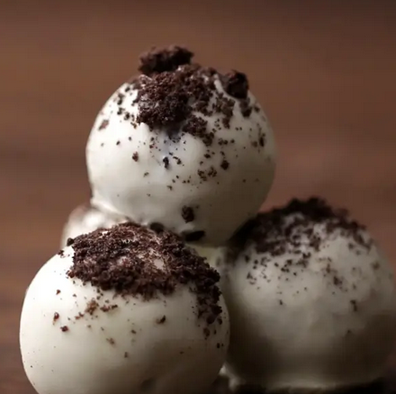

Cookies and Cream Truffles

Description:
Black and white balls of sweet, delicious truffle bliss.
Ingredients:
- 36 chocolate sandwich cookies
- 8 oz cream cheese, softened
- 12 oz white chocolate, melted
Steps:
- In a food processor, finely crush the cookies, reserving about 2 tablespoons of the mixture for sprinkling on top of the truffles.
- In a large bowl, combine the cookie crumbs and cream cheese, stirring until evenly mixed. Chill the mixture for about an hour or until it can be rolled into a ball and hold its shape.
- Divide and roll the mixture into golf ball-sized balls. Dip the truffles in the melted white chocolate and place on a baking sheet lined with parchment paper. Sprinkle the reserved cookie crumbs on top of the truffles before the chocolate hardens.
- Enjoy!